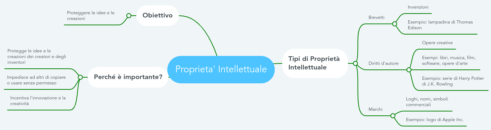

Luca: Ho trovato su Wikipedia questo testo:
<<La proprietà intellettuale, in diritto solo moderno, si riferisce all'apparato di principi giuridici che mirano a tutelare i frutti dell'inventiva e dell'ingegno umano. Sulla base di questi principi, la legge attribuisce a creatori e inventori un vero e proprio monopolio nello sfruttamento delle loro creazioni/invenzioni, ponendo nelle loro mani gli strumenti legali necessari per tutelarsi da eventuali utilizzi a scopo di lucro da parte di soggetti non autorizzati.>>
Puoi spiegarmi con qualche esempio il senso di questa frase?
ChatGPT: Certo! La proprietà intellettuale riguarda la protezione legale delle idee, invenzioni, opere d'arte e altre creazioni che sono il risultato dell'ingegno e dell'innovazione umana. L'obiettivo principale di questa protezione è concedere ai creatori e agli inventori il diritto di controllare e beneficiare delle loro creazioni, impedendo ad altri di utilizzarle senza autorizzazione.
Ecco alcuni esempi che possono aiutarti a capire meglio il concetto di proprietà intellettuale:
-- Brevetti: Se un ingegnere inventa un nuovo tipo di motore più efficiente, può richiedere un brevetto per proteggere la sua invenzione. Il brevetto gli concede il diritto esclusivo di produrre e vendere il motore per un determinato periodo di tempo, impedendo ad altri di copiarlo e di trarne profitto senza il suo consenso.
-- Diritti d'autore: Un autore che scrive un romanzo ha diritto alla protezione dei diritti d'autore sulla sua opera. Ciò significa che nessun altro può copiare, distribuire o modificare il romanzo senza il permesso dell'autore. I diritti d'autore proteggono anche opere come film, musica, software e opere d'arte.
--Marchi: Un'azienda che crea un logo distintivo e accattivante per il proprio brand può registrare il marchio per proteggerlo. La registrazione del marchio impedisce ad altre aziende di utilizzare un logo simile o identico per promuovere prodotti o servizi simili, evitando confusione tra i consumatori e proteggendo la reputazione e il valore del marchio originale.
In sintesi, la proprietà intellettuale fornisce agli inventori e ai creatori gli strumenti legali per proteggere e sfruttare le loro creazioni, impedendo ad altri di utilizzarle per fini commerciali senza il loro consenso.
Luca: Mi proponi una sintesi di quello che mi hai spiegato in una o due frasi?
ChatGPT: La proprietà intellettuale protegge le idee, invenzioni e creazioni derivanti dall'ingegno umano, concedendo ai creatori ed inventori il diritto esclusivo di sfruttare e controllare le loro opere, impedendo ad altri di utilizzarle senza autorizzazione.
Luca: Ottimo. Vuoi ora scrivermi la stessa sintesi in inglese e in milanese?
ChatGPT: Inglese:
Intellectual property protects ideas, inventions, and creations resulting from human ingenuity, granting creators and inventors the exclusive right to exploit and control their works, preventing others from using them without authorization.
Milanese:
La proprietà intelletual la prutezz idee, invenzion e creazion che vegnen föra da l'ingegn umà, e la dà ai creatur e ai inventur el dirit esclusiv de sfruttà e controllà i so' lavur, impedend ai alter de dopràj sensa autorizazion.
Luca: E se volessi spiegare il nostro argomento a un bambino di 10 anni, come potrei fare?
ChatGPT: Potresti dire qualcosa come:
"La proprietà intellettuale è come una regola speciale che protegge le idee e le cose che le persone creano, come storie, disegni, invenzioni e canzoni. Questa regola aiuta a garantire che solo la persona che ha creato qualcosa possa decidere come usarla e condividerla. Così, altre persone non possono prendere queste creazioni e usarle senza chiedere il permesso al creatore originale."
Luca: Vorrei fare una lezione sul nostro tema a una classe di bambini di 10 anni, e la vorrei comprensibile, coinvolgente e interattiva, magari anche con un gioco: mi aiuti?
ChatGPT: Certo, ecco un piano per una lezione interattiva e coinvolgente sulla proprietà intellettuale per bambini di 10 anni:
-- Introduzione (5 minuti): Comincia introducendo il concetto di proprietà intellettuale con parole semplici, come l'esempio che ti ho fornito prima. Chiedi ai bambini se hanno mai creato qualcosa di cui sono orgogliosi, come un disegno, una storia o un'invenzione.
-- Storie di esempi (10 minuti): Racconta brevi storie su inventori famosi, autori o artisti e come le loro creazioni sono protette dalla legge. Ad esempio, potresti parlare di Thomas Edison e la lampadina, J.K. Rowling e la serie di Harry Potter, o Leonardo da Vinci e la Gioconda.
-- Attività di gruppo (15 minuti): Dividi i bambini in gruppi e assegna a ciascun gruppo una categoria di proprietà intellettuale (brevetti, diritti d'autore, marchi). Fornisci alcuni esempi di oggetti o opere che rientrano in ciascuna categoria e chiedi ai gruppi di inventare un'opera o un'invenzione immaginaria per la loro categoria e di pensare a come vorrebbero proteggerla.
-- Gioco - "Indovina la categoria" (15 minuti): Prepara delle schede con esempi di oggetti o opere che rientrano nelle varie categorie di proprietà intellettuale. Mescola le schede e distribuiscile ai bambini. Fai sì che ciascun bambino legga la sua scheda e gli altri cerchino di indovinare a quale categoria appartiene (brevetto, diritto d'autore o marchio).
-- Discussione e riflessione (5 minuti): Riunisci i bambini e chiedi loro di condividere cosa hanno imparato sulla proprietà intellettuale e perché pensano che sia importante proteggere le idee e le creazioni delle persone.
Questa lezione dovrebbe essere comprensibile, coinvolgente e interattiva per i bambini di 10 anni, aiutandoli a comprendere il concetto di proprietà intellettuale e il suo ruolo nella protezione delle idee e delle creazioni.
Luca: Ottimo. Puoi costruire una mappa concettuale per aiutare i bambini a visualizzare i concetti importanti sul nostro tema, e me la scrivi in un linguaggio adatto alla visualizzazione via software?
ChatGPT: Naturalmente! Ecco una semplice mappa concettuale per aiutare i bambini a visualizzare i concetti chiave legati alla proprietà intellettuale,scritta in un formato testuale che può essere utilizzato con la maggior parte dei software di creazione di mappe concettuali:
Proprietà Intellettuale
|
|-- Obiettivo
| |-- Proteggere le idee e le creazioni
|
|-- Tipi di Proprietà Intellettuale
| |-- Brevetti
| | |-- Invenzioni
| | |-- Esempio: lampadina di Thomas Edison
| |-- Diritti d'autore
| | |-- Opere creative
| | |-- Esempi: libri, musica, film, software, opere d'arte
| | |-- Esempio: serie di Harry Potter di J.K. Rowling
| |-- Marchi
| |-- Loghi, nomi, simboli commerciali
| |-- Esempio: logo di Apple Inc.
|
|-- Perché è importante?
| |-- Protegge le idee e le creazioni dei creatori e degli inventori
| |-- Impedisce ad altri di copiare o usare senza permesso
| |-- Incentiva l'innovazione e la creatività
Puoi copiare e incollare questo testo in un software di creazione di mappe concettuali come XMind, Coggle, MindMeister o simili. La struttura ad albero con "|" e "--" rappresenta i livelli e le connessioni tra i concetti. La maggior parte dei software di mappatura concettuale dovrebbe essere in grado di interpretare questo formato e creare una mappa visiva corrispondente.
[questa mappa è stata generata con un editor grafico a partire dal codice sopra] 
Luca: Puoi ora inventare un dialogo in cui una persona prova a spiegare a un'altra come le licenze Creative Commons si pongono rispetto al tema della proprietà intellettuale?
ChatGPT: Persona A: Ciao, volevo parlarti delle licenze Creative Commons. Hai mai sentito parlare di queste licenze?
Persona B: Sì, ne ho sentito parlare, ma non ho mai capito bene come funzionano. Come si collegano al tema della proprietà intellettuale?
Persona A: Bene, le licenze Creative Commons sono un modo per i creatori di gestire i diritti d'autore delle loro opere in modo più flessibile rispetto al diritto d'autore tradizionale. Si basano sul diritto d'autore esistente, ma permettono ai creatori di concedere permessi specifici per l'utilizzo delle loro opere.
Persona B: Quindi, queste licenze sono una sorta di alternativa al diritto d'autore?
Persona A: Non proprio un'alternativa, ma piuttosto un'estensione del diritto d'autore. Le licenze Creative Commons offrono ai creatori la possibilità di scegliere quali diritti riservare e quali concedere al pubblico. Ci sono sei diverse licenze CC, che variano in base ai diritti concessi.
Persona B: Interessante. E come fa un creatore a scegliere la licenza giusta per la sua opera?
Persona A: Dipende dai desideri del creatore e da come vuole che la sua opera sia utilizzata. Ad esempio, alcune licenze consentono l'uso commerciale dell'opera, mentre altre lo vietano. Altre licenze richiedono che le opere derivate siano condivise con la stessa licenza dell'opera originale.
Persona B: Quindi, le licenze Creative Commons in realtà aiutano a promuovere la condivisione e la collaborazione tra le persone, pur proteggendo la proprietà intellettuale
Persona A: Esatto! Le licenze CC consentono ai creatori di condividere le loro opere con il pubblico, pur mantenendo il controllo su alcuni diritti. Questo equilibrio tra condivisione e protezione della proprietà intellettuale può incoraggiare la creatività e l'innovazione.
Persona B: Capisco. Grazie per avermi spiegato come funzionano le licenze Creative Commons e come si collegano alla proprietà intellettuale!
Luca: Per quello che sai, quali sono i principali problemi che la diffusione di LLM potrebbe porre o sta già ponendo a proposito di proprietà intellettuale?
ChatGPT: LLM sta per Large Language Models, come GPT-3 e GPT-4 di OpenAI. Questi modelli di intelligenza artificiale avanzata sono in grado di generare testi coerenti e comprensibili su una vasta gamma di argomenti. La diffusione degli LLM solleva alcune preoccupazioni riguardo alla proprietà intellettuale, tra cui:
-- Plagio: Gli LLM possono generare testi che somigliano a opere esistenti, anche se non copiano direttamente queste opere. Ciò potrebbe rendere difficile distinguere tra contenuti originali e quelli generati da un modello, sollevando preoccupazioni sul plagio e la protezione del diritto d'autore.
-- Creazione di opere derivate: Gli LLM possono essere utilizzati per creare opere derivate basate su opere protette da copyright. Se queste opere derivate non rispettano le leggi sulla proprietà intellettuale, potrebbero verificarsi violazioni del diritto d'autore.
-- Responsabilità legale: Potrebbe essere difficile stabilire chi sia legalmente responsabile per le violazioni della proprietà intellettuale commesse da un LLM. Ad esempio, se un modello genera contenuti che violano il copyright, potrebbe non essere chiaro se la responsabilità ricada sull'utente, sullo sviluppatore del modello o su entrambi.
-- Concorrenza sleale: Gli LLM potrebbero essere utilizzati per generare contenuti di alta qualità a un costo molto inferiore rispetto alla creazione di contenuti umani. Ciò potrebbe creare una concorrenza sleale nei confronti degli autori e dei creatori di contenuti originali.
-- Diritti morali degli autori: Oltre ai diritti economici, la proprietà intellettuale include anche i diritti morali, come il diritto all'integrità dell'opera e il diritto di paternità. Gli LLM potrebbero mettere a rischio questi diritti se vengono utilizzati per creare opere che danneggiano la reputazione di un autore o alterano significativamente il significato originale di un'opera.
Tuttavia, è importante notare che gli LLM possono anche offrire opportunità per migliorare la creazione e la condivisione di contenuti, e la discussione sui loro potenziali rischi dovrebbe essere bilanciata con i benefici che possono portare. Allo stesso tempo, potrebbe essere necessario sviluppare nuovi approcci legali e politici per affrontare le sfide poste dalla diffusione degli LLM in relazione alla proprietà intellettuale.
Luca: Grazie per questo dialogo.
ChatGPT: Prego! Sono stato felice di aiutarti a capire meglio il concetto di proprietà intellettuale. Se hai altre domande o vuoi discutere di altri argomenti, non esitare a chiedere. Sono qui per aiutarti!